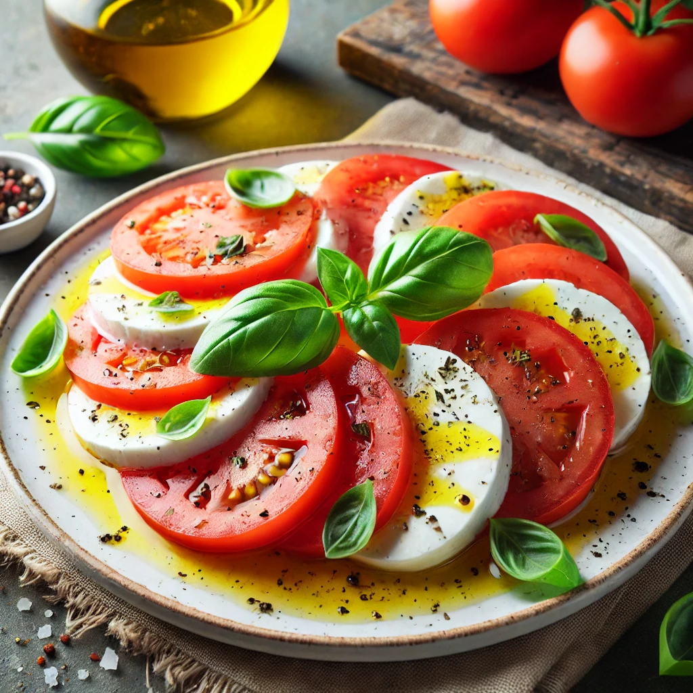

Caprese Salad Recipe

Description
Caprese Salad is a simple yet elegant Italian dish that highlights fresh, high-quality ingredients. It features ripe tomatoes and creamy fresh mozzarella, layered with aromatic basil leaves. Drizzled with extra virgin olive oil and seasoned with a touch of salt and pepper, this salad is a refreshing and light appetizer or side dish that embodies the vibrant flavors of Italy.
Ingredients (Serves 2)
- 2 ripe tomatoes, sliced
- 1 ball (125g) fresh mozzarella, sliced
- Fresh basil leaves
- 2 tablespoons extra virgin olive oil
- Salt and pepper (to taste)
Steps
- Arrange alternating slices of tomato and mozzarella on a plate.
- Tuck fresh basil leaves between the slices.
- Drizzle with olive oil and season with salt and pepper.
- Serve immediately as a refreshing salad or appetizer.
Home